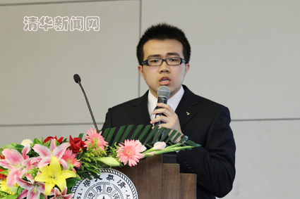
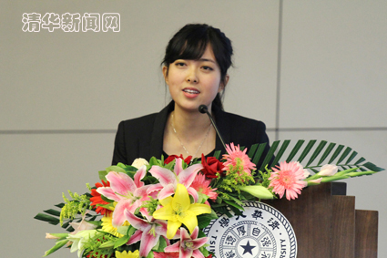
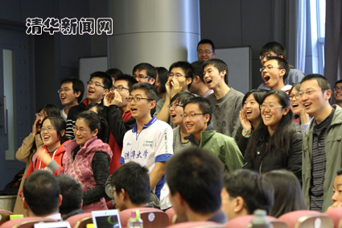
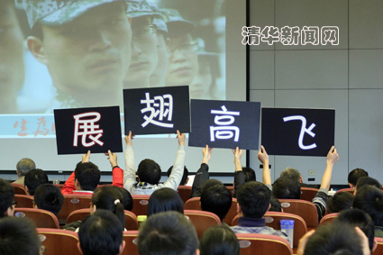
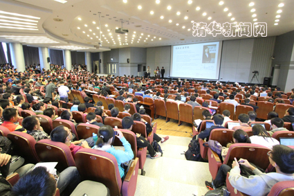

清华新闻网10月22日电 (学通社记者 王泰华 魏 阳)10月18日下午，2011-2012学年清华大学本科生特等奖学金答辩会在清华大学主楼后厅举行，来自建筑学院、水利系、生命学院等院系的14位候选人分别展示了自己在学习、科研、社工、体育等方面的表现，由清华大学“关心下一代委员会”的老教师代表、各院系教师代表、学校相关部门负责人，以及往届特等奖学金获得者代表和校学生会主席共22人组成的答辩评委进行了投票评选。

图为参加答辩候选人。王皓冉 摄
今年的候选人从往年的10人增加到14人。建筑学院唐海达、土木系张莉、水利系江汉臣、工业工程李文昊、电机系杨知方、电子系屠环宇、计算机系方展鹏、材料系林鼎昌、生命学院欧阳书淼、交叉信息院贾志豪、经管学院冀东星、新闻学院胡泽、美术学院姚璐、医学院史欣未等14位候选人参加了答辩。候选人的答辩由介绍人介绍、候选人展示和评委提问三个环节组成，答辩顺序采取抽签的方式决定。

图为答辩候选人美术学院姚璐。王皓冉 摄
在答辩中，冀东星以“我不高不富也不帅”的自我调侃开场，回顾了自己大学三年来的自强之路。已经两度获得综合奖学金的他依然记得刚入学时的困难：“大一时，我竞选班长只有两票，面试学生会受挫，我似乎要被贴上平庸的标签。”为此，大学三年冀东星每天都坚持七点到教室自习，十点半才离开。现在冀东星不仅带领班级获得了校甲级团支部荣誉称号，也获得了专业学习的优异成绩。

图为候选人亲友团加油助威。王皓冉 摄
胡泽的推荐人周庆安老师称赞他为少有的“能从指挥官角度看问题”的本科生。作为参加答辩的唯一一名文科国防生，特殊的身份使他受到了评委们的“刁难”，评委们接连提出“答辩流程是否合理”“研究成果是否涉密”等多个问题，胡泽出色的现场应变能力赢得了现场师生的掌声。
“我要为平凡人做出不平凡的设计。”姚璐同学坚信设计师应该让每个人受益，她对设计的独特理解使得她在获得国际大奖的同时，也在美院特殊的评分标准下依然保持每年学分绩第一的水平。

图为候选人亲友团举起标语。 王皓冉 摄
除了学业成绩和素质测评双优、社工工作经历丰富、在班级同学中广受欢迎这些共性外，今年的候选人中也涌现出了很多“运动健将”：杨知方带领班级足球队从之前的惨败给对手转而一雪前耻勇夺全系冠军；平时被同学们亲切称为“犇哥”的李文昊喜爱健美和跳水等运动，他在答辩中笑称喜爱武术巨星李小龙，因为从其身上学到了永不言弃的精神。
14位候选人的努力和成绩也引起了现场同学的共鸣，“我发现他们的成功也不是一帆风顺的，在他们闪光成绩的背后，付出了许多我们看不到的努力。”电子系无01的樊振凯说，他觉得走进这些人的世界也是对自己实现梦想的一种激励。

图为特奖公开答辩会现场。王皓冉 摄
工业工程系学生朱俊林今年已经是第二次担任特奖答辩会的主持人了，他两年来的感受是：“特等奖学金最重要的意义是对获奖人的肯定和对同学们的激励。候选人不断进取、从平庸到出色的事迹总能给人动力。”
今年的本科生特等奖学金答辩会再一次成为了全校同学关注的焦点。不仅可容纳400余人的答辩会现场座无虚席，许多未到现场的师生还通过观看网络视频直播、校内站点网页图文直播等方式实时关注答辩会的进展和投票结果。
经过长达3个小时的展示环节之后，22位评委进行独立投票，并现场公布了候选人的得票数。现场投票结果将提交校务会议讨论审定，并将在得到超过半数评委支持的候选人中产生最终的本科生特等奖学金获得者。
清华大学特等奖学金设立于1989年，旨在表彰德、智、体、美全面发展或是在某一方面具有突出特长或贡献的优秀学子，是清华学生的最高荣誉。
供稿：校团委